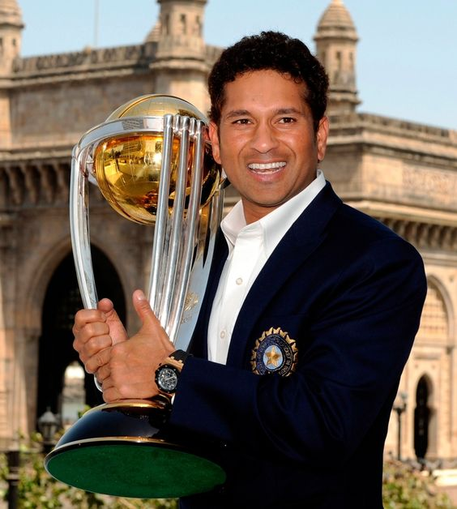
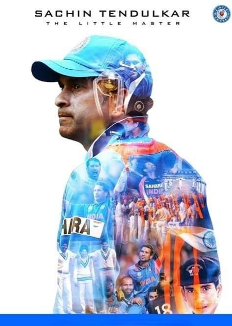

SACHIN TENDULKAR
Tribute Page of
Sachin Tendulkar
He is a
Sachin Tendulkar, in full Sachin Ramesh Tendulkar, (born April 24, 1973, Bombay [Mumbai], India), Indian professional cricket player, considered by many to be one of the greatest batsmen of all time. In 2012 he became the first cricketer to score 100 centuries (100 runs in a single innings) in international play.

Personal Life

On 24 May 1995, Tendulkar married Anjali Mehta, a paediatrician of Gujarati origin, whom he had first met in 1990.Anjali decided to leave her medical career following their marriage.They have two children: Sara and Arjun.Tendulkar lives in a bungalow in the Mumbai suburb of Bandra.
Tendulkar is a Hindu.He is a devotee of the deity Ganesha and of the guru Sathya Sai Baba, whom he visited for the first time in 1997.The death of Sai Baba on Tendulkar's 38th birthday caused him to cancel his celebrations.
Biography

Tendulkar scored his much awaited 100th international hundred on 16 March 2012 against Bangladesh in the Asia Cup. He became the first person in history to achieve this feat. Incidentally, it was Tendulkar's first ODI hundred against Bangladesh. He said "It's been a tough phase for me ... I was not thinking about the milestone, the media started all this, wherever I went, the restaurant, room service, everyone was talking about the 100th hundred. Nobody talked about my 99 hundreds. It became mentally tough for me because nobody talked about my 99 hundreds."
Tendulkar opened the batting at Auckland against New Zealand in 1994, making 82 runs off 49 balls.He scored his first ODI century on 9 September 1994 against Australia in Sri Lanka at Colombo. He competed in 78 ODIs before scoring his first century.Tendulkar scored 143 (131) runs in Sharjah against the Australian team in the 1998 Coca-Cola cup, including 5 sixes in an innings against Shane Warne, Damien Fleming and Michael Kasprowicz.
He has been Man of the Match 13 times in Test matches and Man of the Series four times, including twice in the Border-Gavaskar Trophy against Australia.

Achivements

MAJOR ACHIEVEMENTS OF SACHIN TENDULKAR
- Tendulkar Helped INDIA WIN The 2011 ICC World Cup.
- 1999 – Padma Shri Ribbon.svg Padma Shri, India's fourth-highest civilian award.
- He Was The First Male Player to Score a Double Hundred In ODIS
- 1994 – Arjuna Award, by the Government of India in recognition of his outstanding achievement in sports.
- 1997–98 – Khel Ratna Award, India's highest honour given for achievement in sports.[
- 2001 – Maharashtra Bhushan Award, Maharashtra state's highest civilian award.[s
- 2008 – Padma Vibhushan Ribbon.svg Padma Vibhushan, India's second-highest civilian award.
- 2008 – 2014 – IND Bharat Ratna BAR.png Bharat Ratna, India's highest civilian award.
- His biggest achievement is that he was the biggest hope for billions of Indians during his playing time and is still an inspiration to many because of his philanthropic work.
Special Moments
1. A song about Sachin Tendulkar
2. Special Quotes for Motivation
My Gallary